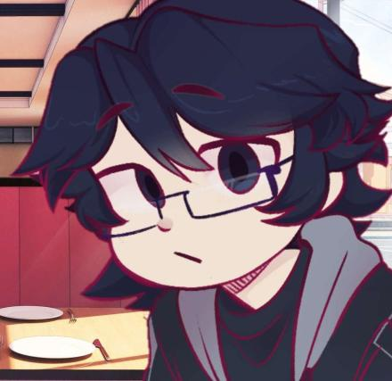

Canal do Youtube
O criador do site possui um canal do Youtube onde ele posta alguns vídeos de jogos ou sobre a sua animação que está sendo produzida, por lá você pode conferir cada vídeo que foi feito com carinho para vocês se divertirem assistindo.
Lembrando que quem está no servidor do Discord tem a possibilidade de participar de algum vídeo junto com criador e seus amigos. Clique em Canal do Youtube para ter acesso ao canal do criador e não esqueça de apoiar o canal com seu like e inscrição.
Descrição do canal:
📜 Olá, seja bem vindo ao meu canal, eu sou o Gyunt Hunter, e venho lhe convidar ao meu canal. Aqui você encontra vídeos de humor em vários jogos, Gameplays, e vídeos sobre minha tripulação no Blox Fruits.
📮 Ah..Você não conhece ela? Por que não se aproxima e vê o que ela tem a oferecer? Bom..O que achou? Faça parte desta jornada também colega!!